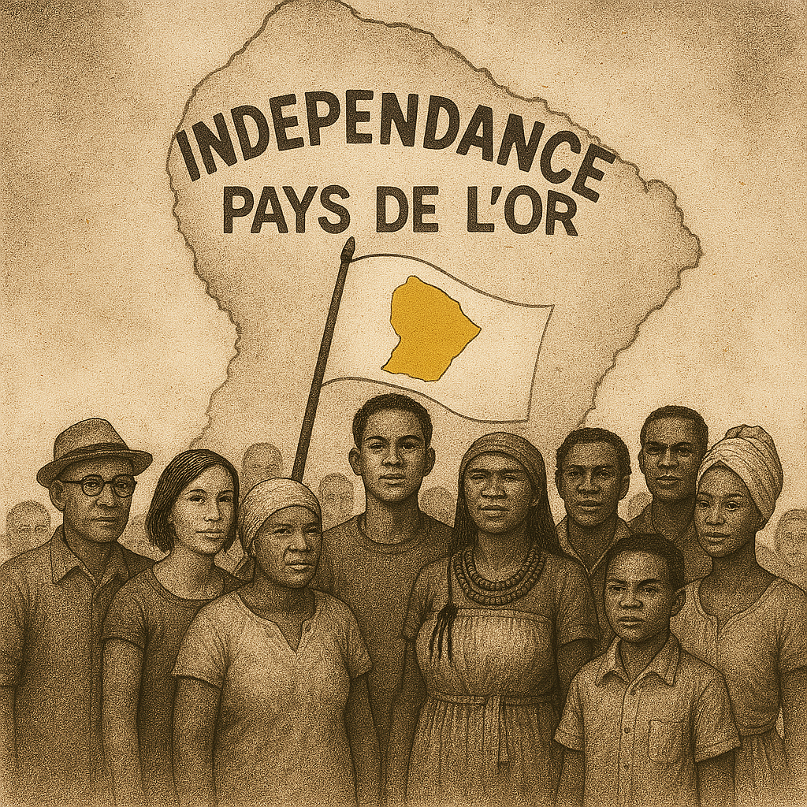

Une charte fondatrice rédigée avec conscience, destin, et souveraineté
citoyenne.

📜 Message d’André Destine
La présente Constitution du Pays de l’or est l’expression d’une volonté collective et inébranlable d’assurer l’indépendance complète de la Guyane et de bâtir une nation souveraine, harmonieuse et juste, guidée par les valeurs du Destinisme. Elle s’inscrit dans un monde marqué par la diversité des idées et des pensées idéologiques, mais seules les critiques ou observations émanant du peuple du Pays de l’or pourront être prises en considération, renforçant ainsi l’authenticité et la souveraineté populaire.
Tous les citoyens sont invités à éduquer leur esprit critique afin de lire, étudier et comprendre cette Constitution, qui constitue le socle de la nouvelle identité nationale. Cette démarche inclut également une phase essentielle de rééducation nationale, pour cultiver une pensée critique éclairée et contrer toute manipulation d’opinion ou d’influence politique contraire aux principes fondateurs. La rééducation des mentalités sera une étape clé après l’indépendance, pour ancrer les valeurs de cette Constitution dans la conscience collective et guider le destin de la nation.
Dans ce monde, l’arrogance des politiciens et politiciennes, et même des élus, c'est de croire que c'est eux qui décident. Aucune manipulation d’opinion ou influence politique, particulièrement venant de ceux opposés à l’indépendance ou aux principes fondamentaux de cette Constitution, ne sera tolérée. Peut-être pas aujourd’hui ni demain, mais quand le moment sera venu, ceux qui défieront la volonté souveraine du peuple en s’opposant ouvertement à cette indépendance seront définitivement exclus, de manière inaliénable, de tout avenir politique ou administratif au Pays de l’or, ou de traités internationaux s’ils sont des pays ou dirigeants de pays étrangers. Cette mesure prévient les oppositions de pensées ou idéologiques destructrices susceptibles de nuire à l’unité et à l’harmonie nationale. Car l’indépendance de la Guyane est sa suite logique, même si au stade actuel de son développement, cela semble improbable. Aucune autorité, ni députés, ni président, ni ministres, ni maires, ni élus, ni cette caste privilégiée d’individus sur le territoire, ni le personnel politique de la Guyane ne pourront pas nous arrêter.
Cette constitution, rédigée le 28 avril 2025 par André Destine, est une proposition citoyenne émanant d’un Antillais du Pays de l’or. Elle incarne une vision construite sur la souveraineté, l’harmonie et les valeurs du Destinisme, tout en respectant les traditions et aspirations du peuple. Il est important de préciser que cette constitution n’est pas imposée. C’est une proposition ; elle constitue une contribution au débat national et est encouragée à être adoptée lorsque le moment sera venu, dans un esprit de dialogue et d’unité.
L’adoption de cette constitution devra être validée par un référendum national auquel tous les citoyens majeurs du Pays de l’or sont invités à participer, à condition d’avoir lu et compris son contenu. Si elle est approuvée par la majorité, elle entrera en vigueur comme la loi suprême de la nation. Lorsque les institutions prévues par cette constitution seront mises en place, elle devra être officiellement signée par le Président du Conseil Constitutionnel, le Premier ministre et le Leader du Pays de l’or. Ce texte aspire à guider le peuple vers un avenir lumineux, fondé sur l’indépendance, l’autonomie, la modernisation rapide, le respect mutuel et la dignité collective.
Ainsi, cette Constitution marque le début d’une nouvelle ère de liberté, de justice et de progrès pour le peuple du Pays de l’or, unis autour des valeurs communes de dignité, de souveraineté et d’espoir. Et contrairement à certaines anciennes colonies françaises, le Pays de l’or ne devrait pas être amené à porter un regard négatif sur la France, qui, nous l’espérons, sera un partenaire important. Comme une mère qui porte un regard protecteur sur son enfant, une sœur à qui demander des conseils, une amie avec des relations saines et sincères.
Titre XIV – LA RESPONSABILITÉ PÉNALE DES MEMBRES DU GOUVERNEMENT
Titre XV – LE RÔLE ET LA RESPONSABILITÉ SCIENTIFIQUE ET
ENVIRONNEMENTALE
Titre XVI – LE DÉFENSEUR DES DROITS
Titre XVII – BONHEUR NATIONAL BRUT
Titre XVIII – L’INTERNATIONAL
Titre XIX – L’ENVIRONNEMENT
Titre XX – LES CULTURES ET TRADITIONS
Titre XXI – LE PROGRÈS
Guyavenir est l'organisation citoyenne, indépendante et stratégique, chargée
de l'indépendance de la Guyane, de la création du Pays de
l'or et de réaliser le Plan de Modernisation Rapide du territoire !
Retrouvez ici les représentations officielles du Pays de l'or : son drapeau, son emblème d’État et sa gouvernance harmonique.
Ces symboles sont librement accessibles pour tout usage citoyen, pédagogique ou artistique, dans le respect des lois constitutionnelles.
🛫 Espace citoyen – Ségrégation à l’aéroport de Cayenne
Actuellement, le contrôle des frontières est marqué par des politiques qui semblent sélectives et arbitraires. À l’aéroport de Cayenne, des contrôles systématiques à 100% sont réalisés uniquement sur des personnes noires ou supposées étrangères ou ayant un soi-disant profil suspect sur la base de leur apparence physique. Ce ciblage est souvent fondé sur le nom de famille, l’apparence physique ou la provenance géographique, notamment les habitants de Saint-Laurent du Maroni, suspectés à tort d’être liés au trafic de drogue venant du Suriname. Cette politique discriminatoire, conçue par le préfet de Guyane et mise en œuvre par les douaniers et policiers, est une forme de ségrégation institutionnelle qui ne repose sur aucun critère objectif.
Le principe de sécurité aux frontières ne doit pas être basé sur une discrimination arbitraire, mais sur des procédures égales pour tous les voyageurs. S’il existait une réelle volonté de lutter contre les trafics illicites, la fermeture des frontières avec le Suriname et le Brésil serait une solution plus cohérente, ou un contrôle universel et équitable appliqué à pratiquement tous les passagers, et non uniquement à ceux jugés suspects sur des bases subjectives.
Le dispositif de contrôle dit « 100 % » appliqué à l’aéroport de Cayenne est dénoncé par de nombreux citoyens comme une politique discriminatoire ciblant injustement certaines populations.
Cet espace vous permet d’exprimer votre expérience, de participer à la documentation des abus, et de faire entendre votre voix face à une forme institutionnelle de ségrégation.
Guyavenir invite les citoyens à documenter les cas de contrôle abusif fondés sur l’apparence physique, le nom de famille ou la commune d’origine.
Un formulaire de recueil confidentiel est disponible pour faciliter cette démarche. Les témoignages peuvent être anonymes ou signés.
Ensemble, bâtissons un territoire fondé sur l’équité, la dignité, le respect mutuel et le refus des discriminations.